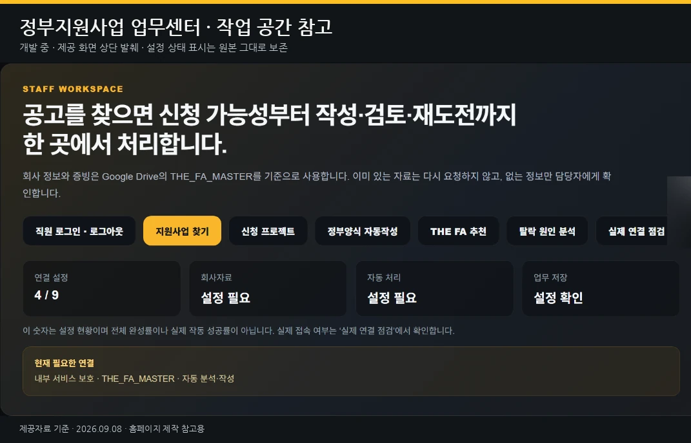

기업·개인 운영 · 업무 자동화
정부지원사업 업무센터
직원이 사용하는 지원사업 업무 공간 · 개발 중
공고 탐색부터 신청 준비, 다음 도전까지.
회사자료를 바탕으로 지원사업의 신청 가능성을 검토하고, 기관별 양식과 사업계획서 작성, 제출 전 검토, 결과 분석과 재도전 준비를 한곳에서 지원하는 업무센터를 개발하고 있습니다.
화면 참고 · 실제 연동 검증 전

개발 중인 업무센터 화면 참고 · 실제 연동 기능 검증 전 · 원본 캡처의 “연결 설정 4/9”는 설정 진행 상태이며 성공률·실적이 아닙니다.
업무센터가 다루는 6가지 영역
- 지원사업 공고 탐색
- 신청 가능성·맞춤 추천
- 회사자료 재사용
- 기관별 양식·신청서 작성
- 제출 전 검토
- 결과 기록·재도전
업무 흐름
01공고 탐색
02신청 가능성 검토
03회사자료 연결
04신청 준비·양식 작성
05제출 전 검토
06결과 기록
07보완·재도전
위 흐름은 개발 중인 업무 방향입니다. 각 단계는 확인·검증이 필요한 개별 기능입니다.
화면 이해를 돕는 안내
‘연결 설정 4/9’는 화면 안의 연결 항목 설정 진행 상태입니다. 개발 진행률, 성공률, 지원사업 선정 실적이 아닙니다.
‘설정 필요/설정 확인/연결 설정 중’ 표시는 기능 완료를 뜻하지 않습니다.
제출 버튼이 있는 독립 서비스가 아니라 개발 중인 업무 공간의 소개 화면입니다.
‘설정 필요/설정 확인/연결 설정 중’ 표시는 기능 완료를 뜻하지 않습니다.
제출 버튼이 있는 독립 서비스가 아니라 개발 중인 업무 공간의 소개 화면입니다.
우리가 지키는 원칙
화면에 표시된 공고 탐색 대상 기관은 연동 완료나 공식 제휴를 뜻하지 않습니다. 선정을 보장하거나 정부기관의 공식 적격 판정을 대신하지 않으며, 자동 승인·자동 제출 서비스가 아닙니다.